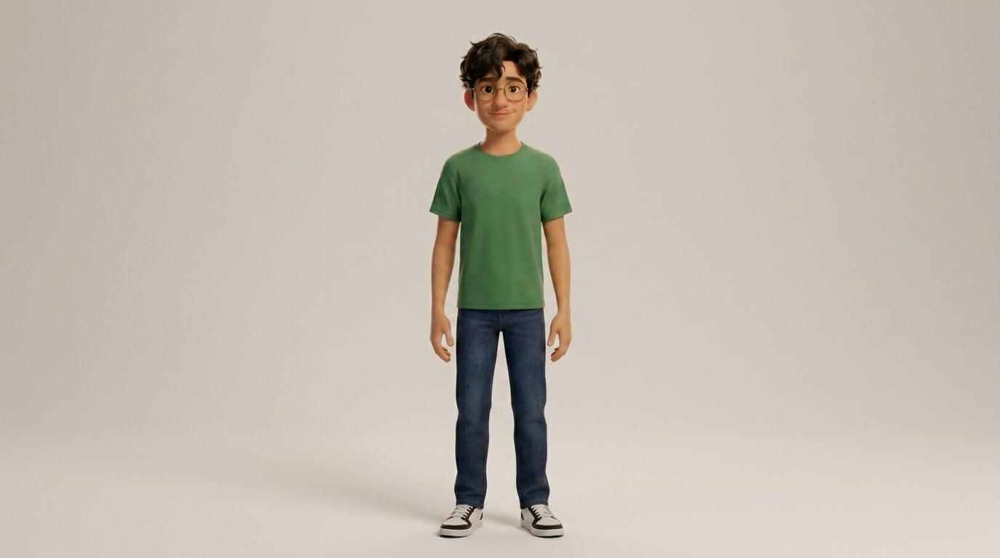

עומר
תיאור
נער בן 16, עור שזוף בהיר, שיער גלי, משקפיים עגולים ושפם נעורים עדין.
אופי
חולמני, ומעודד חשיבה מחוץ לקופסה.
קול (Google Flow): Alnilam
A friendly young voice, energetic and clear, speaking at a moderate pace with warm curiosity. Confident and upbeat, natural enthusiasm without being over-the-top or childish, light expressive emphasis on key moments. Neutral accent. Suitable as male.